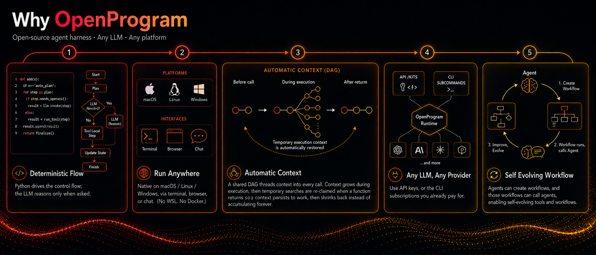
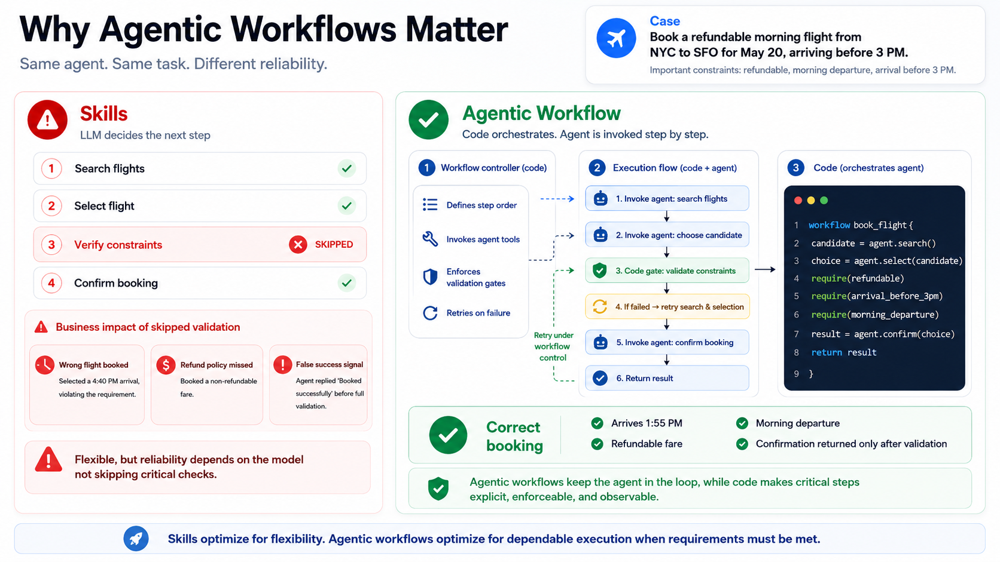
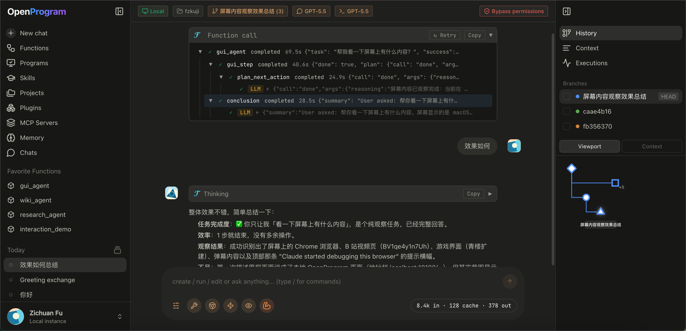
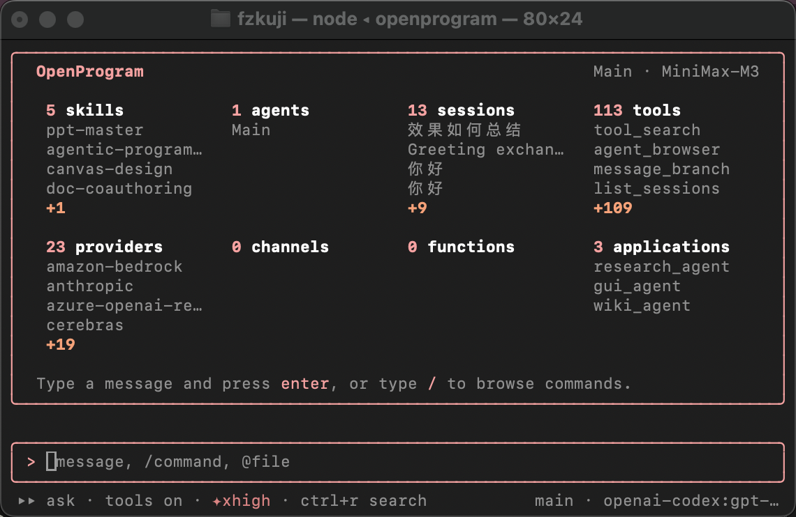

Open-Source, General-Purpose Agent Harness — Build Your Workflows in Python.
Any LLM · Any Platform


Getting Started · Docs · API Reference · Philosophy · 中文
"The more constraints one imposes, the more one frees oneself." — Igor Stravinsky, Poetics of Music
We propose Agentic Programming. An LLM is flexible; code is deterministic. Let the model run everything and you get chaos — unpredictable execution, context explosion, no output guarantees; hard-code everything and you lose the intelligence. A harness balances the two, interleaved moment to moment — Python for the flow you want fixed, the LLM for the judgement you can't script. (the full rationale →)
🎉 Paper: LLM-as-Code: Agentic Programming for Agent Harness — accepted at the KDD 2026 Workshop on Agentic Software Engineering (AgenticSE).

- Deterministic flow, flexible reasoning — Python drives the control flow; the LLM reasons only when asked.
- Run it anywhere — native on macOS / Linux / Windows, via terminal, browser, or chat (no WSL, no Docker).
- Automatic context — a shared DAG threads context into every call; multi-agent ready.
- Any LLM, any provider — API key, or the CLI subscription you already pay for.
- Self-evolving workflows — the agent builds, runs, and improves its own workflows and tools.

Quick Start#
1. Install#
macOS / Linux:
curl -fsSL https://raw.githubusercontent.com/Fzkuji/OpenProgram/main/scripts/install.sh | bash
Windows (PowerShell):
iwr -useb https://raw.githubusercontent.com/Fzkuji/OpenProgram/main/scripts/install.ps1 | iex
More options — flags, unattended / AI-agent install, installing from a checkout: install.md.
2. Run#
openprogram
First run sets up your provider, then asks which surface to open. Skip the prompt with openprogram tui (terminal) or openprogram web (browser → http://localhost:18100).
3. Add a harness#
Harnesses are programs under openprogram/functions/agentics/. Anything cloned into that folder auto-registers on the next worker restart — that's the universal way any program (including your own) plugs into OpenProgram. Pure-Python harnesses also have a one-line shortcut, openprogram programs install <name>, which clones them there for you.
| Harness | Install | What it does |
|---|---|---|
| GUI Agent | openprogram programs install gui (pulls PyTorch), then its installer for the detector/OCR assets — guide |
Drives desktop apps & OSWorld VMs by vision. |
| Research Agent | openprogram programs install research |
Literature survey → experiments → paper draft. |
| Wiki Agent | openprogram programs install wiki |
Turns notes / docs / chats into an Obsidian vault with [[wikilinks]]. |
| Any third-party harness | openprogram programs install <owner>/<repo> (or a full git URL) |
Same flow — clone, deps, contract check; no registration anywhere. |
Writing your own installable harness is one layout contract away — the full guide (install, manage, author, test, publish) is docs/installing-harnesses.md.
Need a workflow of your own? Just ask the agent in chat — the bundled
agentic-programmingskill handles the rest.
Troubleshooting#
Two diagnostic commands cover most "it broke and I don't know why" situations:
openprogram rescue # 11 platform-agnostic probes, each with a fix command
openprogram doctor # quick "is the install healthy?" check
openprogram logs tail # follow the worker log live
openprogram providers doctor # OAuth tokens — expiring? refresh wired?
rescue is the one to reach for first when something doesn't work — it doesn't depend on an LLM being reachable, walks through provider config, ports, dependencies, build artefacts, and prints the exact command to fix each finding. Case-by-case docs live in docs/troubleshooting.md.
For platform-builder topics (Runtime retry semantics, the full @agentic_function decorator API, the flat-DAG context model) see docs/API.md and the per-topic notes under docs/api/.
Power-user commands#
openprogram logs list # all log files with size + age
openprogram logs tail worker -f # follow worker.log
openprogram completion bash # autocomplete: bash | zsh | powershell
openprogram secrets list # same as `providers list` (openclaw-style alias)
openprogram providers use <prov> [profile] # pick which account a provider runs on
openprogram providers login <prov> --profile work # add a second account
openprogram worker status # is the backend up? on what port?
openprogram --resume <session-id> # pick up a previous chat
Providers & models live in Settings → Providers (web UI). Each provider takes multiple accounts and multiple API keys under one credential pool — keys auto-rotate, cooling off a rate-limited one. Need a provider that isn't in the built-in list? Add custom provider takes just a Name and Base URL (id auto-generated) for any OpenAI-compatible endpoint; browse its models from the provider's /models endpoint or add a model by id, same multi-key management as the rest.
How to use#
Two ways to interact day-to-day — same backend, same sessions, switch freely.
Web UI — openprogram web#
Opens at http://localhost:18100. The full surface: a live mini-DAG of the session on the right rail, branch / merge / attach on any node, multi-agent rows tagged by producer, and drag-and-drop file attachments. Best when you want to see and steer the execution tree, or for longer, branching work.

Terminal UI — openprogram#
The same backend without the browser — same commands, same chat history. Picks the native renderer per OS: Ink on macOS / Linux, Rich on Windows. Best for staying in the terminal or over SSH. One-shot, no UI: openprogram --print "…".

Sessions live in
~/.openprogram/and are shared by both — start in the terminal, pick it up in the browser tab, and vice versa.
CLI use#
Beyond the chat UIs, the openprogram command runs headless — script it, pipe it, automate it.
# One-shot: send a prompt, print the answer, exit (redirect or pipe it)
openprogram --print "summarise CHANGELOG.md" > summary.md
# Run a specific agentic function with key=value args
openprogram programs run research --arg topic="state-space models"
# Resume an earlier session by id
openprogram --resume local_d9a16a6b06
Same backend and sessions as the UIs (~/.openprogram/) — a --print run or a resumed session shows up in the web / terminal UI too.
Detailed features#
| Feature | One-line summary |
|---|---|
| Automatic context | Every @agentic_function call is a tree node; the runtime threads it through nested LLM calls — no manual prompt assembly. |
| Deep work | deep_work(task, level) runs an autonomous plan → execute → evaluate → revise loop until the output meets the chosen quality bar. State persists to disk. |
| Functions that author functions | New / fixed @agentic_functions are written by the agent itself via ordinary file-editing tools, guided by the agentic-programming skill. No dedicated create() / fix() calls. |
| Conversation as a git DAG | Sessions are commits + branches + merges + cherry-picks, with the right sidebar exposing the operations. File-touching branches run in isolated git worktrees. |
| Layered memory | Six stores under ~/.openprogram/memory/ (journal / wiki / sleep / scheduler / recall_counts / store), each for a different timescale. The agent picks the layer. |
| Mini-DAG execution view | The right rail draws every node + edge of the active session, scrolls with the chat, and offers a d3-hierarchy layout for fan-out-heavy traces. |
| Multi-agent + multi-channel | Every row tagged with its producer agent; channel layer wires external transports (Discord today, more coming). |
The detailed tour of each one — code samples, design rationale, where to look in the codebase — lives in docs/features.md.
Integration#
| Guide | Description |
|---|---|
| Getting Started | 3-minute setup and runnable examples |
| Claude Code | Use without API key via Claude Code CLI |
| OpenClaw | Use as OpenClaw skill |
| API Reference | Full API documentation |
Project Structure
openprogram/
├── __init__.py # agentic_function re-export
├── cli.py # `openprogram` command entry point
├── agentic_programming/ # engine — paradigm-essential primitives
│ ├── function.py # @agentic_function decorator
│ ├── runtime.py # Runtime (exec + retry + DAG context)
│ ├── session.py # session lifecycle
│ └── skills.py # SKILL.md discovery
├── context/ # flat-DAG context model — nodes, storage, render, compute_reads
├── providers/ # Anthropic, OpenAI, Gemini, Claude Code, Codex, Gemini CLI
├── functions/
│ ├── _registry.py # unified registry for tools + agentic functions
│ ├── tools/ # @function leaves — bash, read, edit, grep, semble_search, web_search, …
│ └── agentics/ # @agentic_function modules (each its own dir, code in __init__.py)
│ ├── ask_user/ # ask the user a clarifying question
│ ├── deep_work/ # autonomous plan-execute-evaluate loop
│ ├── extract_pdf_figures/ # PDF figure extraction
│ ├── … # other agentics …
│ ├── GUI-Agent-Harness/ # GUI agent (separate repo, cloned in)
│ ├── Research-Agent-Harness/ # Research agent (separate repo, cloned in)
│ └── Wiki-Agent-Harness/ # Wiki agent (separate repo, cloned in)
└── webui/ # `openprogram web` — browser UI
skills/ # SKILL.md files for agent integration
examples/ # runnable demos
tests/ # pytest suite
Contributing#
This is a paradigm proposal with a reference implementation. We welcome discussions, alternative implementations in other languages, use cases that validate or challenge the approach, and bug reports.
See CONTRIBUTING.md for details.
Acknowledgements#
OpenProgram stands on shoulders. The tool framework, provider abstraction, and several tool implementations were ported or adapted from the projects below — each under its own license. Enormous thanks to their authors.
- OpenClaw (MIT) — layout of the
tool registry (
name / description / parameters / execute), provider abstraction withcheck_fn+requires_envgating,TOOLSETSpresets, skill loading via SKILL.md frontmatter + late-boundread. Our full clone lives underreferences/openclaw/(gitignored) for browsing. - hermes-agent
(MIT) — starting point for
execute_code(we trimmed the Docker / Modal layers),mixture_of_agents, and the general shape of the multi-providerweb_search/image_generate/image_analyzetools. - pi-coding-agent
(MIT) — via OpenClaw's import, the canonical AgentSkill shape
(
<available_skills>XML formatter, name / description / location). - Claude Code — overall ergonomics
of the
DEFAULT_TOOLSset (bash + read / write / edit + glob / grep / list- apply_patch + todo_read / todo_write) and the
todotool's JSON schema.
- apply_patch + todo_read / todo_write) and the
- Anthropic / OpenAI / Google SDKs — provider HTTP contracts; our providers call the raw HTTP APIs to keep SDK dependencies optional.
Individual tool files call out their direct inspirations in file-level docstrings where the lineage is more specific. These MIT-licensed components keep their original MIT terms; the combined work is distributed under AGPL-3.0.
Citation#
Using OpenProgram in your work, or building on the code? Please cite our paper — and under the AGPL, any derivative you distribute or run as a network service must itself be open-sourced under the AGPL, with attribution preserved (see License).
LLM-as-Code: Agentic Programming for Agent Harness — accepted at the KDD 2026 Workshop on Agentic Software Engineering (AgenticSE). arXiv:2606.15874
@inproceedings{qi2026llmascode,
title = {LLM-as-Code: Agentic Programming for Agent Harness},
author = {Qi, Junjia and Fu, Zichuan and Gao, Jingtong and Zhang, Wenlin and Yan, Hanyu and Wu, Xian and Zhao, Xiangyu},
booktitle = {KDD 2026 Workshop on Agentic Software Engineering (AgenticSE)},
year = {2026},
eprint = {2606.15874},
archivePrefix = {arXiv},
url = {https://arxiv.org/abs/2606.15874},
}
License#
AGPL-3.0 © 2026 Fzkuji. Free to use, study, modify, and share — but any derivative you distribute or run as a network service must also be released under the AGPL, with attribution preserved.